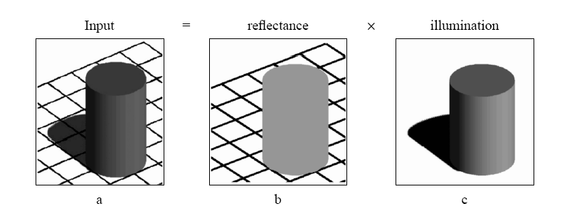
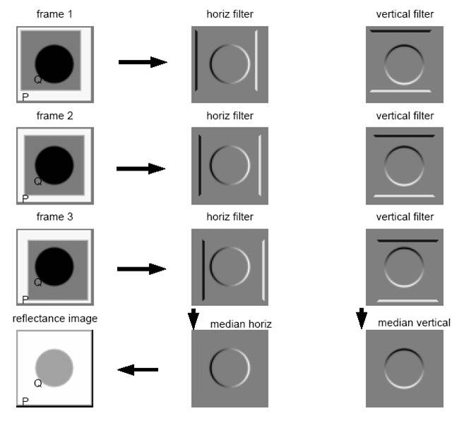
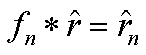
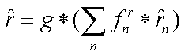
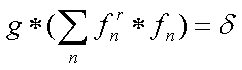
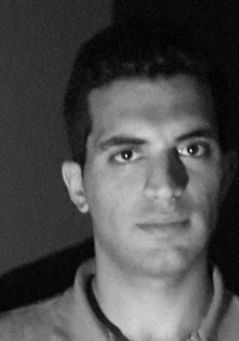
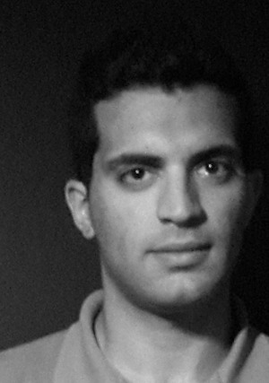
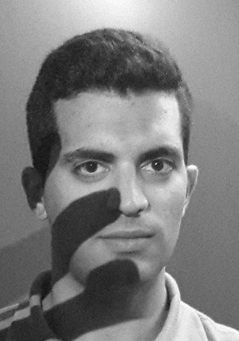

Shadow removal from faces
Project abstract
The goal of this project is performing shadow removal from images of faces. Faces are often a key feature in pictures, but sometimes, bad lighting in the scene with possible combination of non-optimal camera settings, can cause faces to look too dark and covered with shadows.
To achive our goal of removing shadow, Our method uses multiple images of the person in good lighting conditions to fix an image with shadows. The following describes the ideas and methods implemented.
Introduction: intrinsic images
Intrinsic images are a useful midlevel description of scenes proposed by Barrow and Tenenbaum.
The intrinsics of an image are composed of two parts: reflectance, and illumination. These are defined such that multiplying the reflectance with the illumination, we get the original image, as illustrated here:
To remove the multiplication, we work with the log domain.
Finding the intrinsics of an image
Deriving intrinsic images from image sequences (Yair Wiess): given a sequence of images as input, we solve this equation: $I(x,y,t)=R(x,y)L(x,y,t)$ and find $R(x,y)$, where $R(x,y)$ is constant in all images.
How does it work?
- We take 2 derivative filters, horizental and vertical.
- Convolve every derivative filter with every image in the sequence.
- Now we take all horizental derivative images and implement an image by median of all of them.
- We do the same for the vertical derivative images.
- Now we have 2 images.
Illustration As shown in Yair's article:
Note that all images must be aligned.
Now we need to transform back to the original image and find 'r'. To do so we solve the linear equations:
.Solution is given by these equations:

Warping faces
The above algorithm assumes that the images are aligned. To use it we need to first warp the faces to be aligned as closly as possible to the face which we want to fix.
Results
Example source images:
  Results:
Source code
Soure code with test images
Soure code only
Run script.m. To choose a different folder for source
images change the
image_prefix variable.
References
Deriving intrinsic images from image sequences, Yair Weiss, ICCV 2001